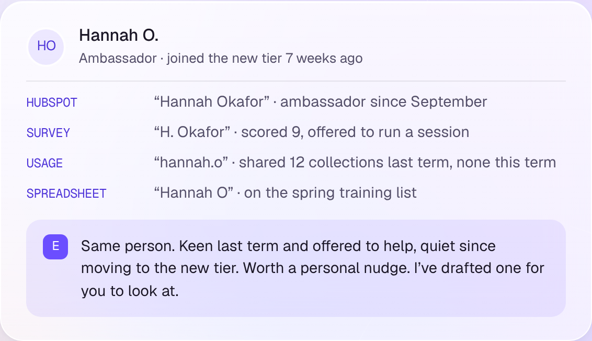
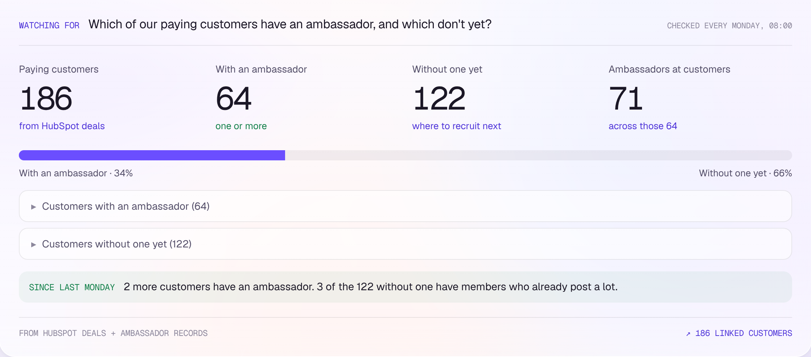
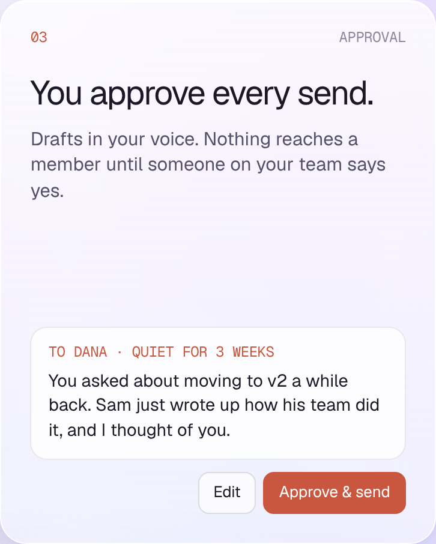

Customer story · Wakelet
Two people ran
Wakelet’s community.
Ellie found the
members they
couldn’t see.
Documents
Spreadsheets
Wakelet’s own data
HubSpot
NPS + CRM report
Built by hand
Before
The answer was
spread across
four places.
Hours of copying, every week.

Example data
The hard part
One ambassador.
Four records.
One person.

Example data
With Ellie
Ellie checks
every Monday,
without anyone
asking.
Remembers last week · flags what changed

You approve every send
Nothing reaches
a member until
someone on your
team
says yes.
Time back
½ day
back, every week.
At least.
More than
20
working days a year.
Ambassador programme → rebuilt into tiers
In James’s words
“It helps you identify
underserved members
who might not be the
loudest voices
in your community.”
James Davis · Head of Community and Growth, Wakelet
centralsquare
▪
ai
See who’s
quietly engaged
in your community.
Find your quiet members →
centralsquare.ai · 20-minute demo